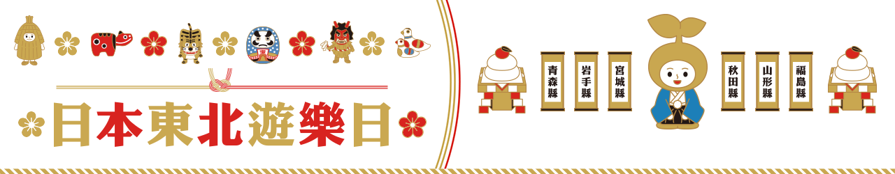
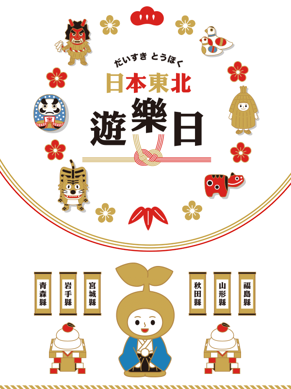
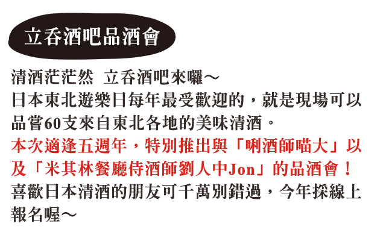
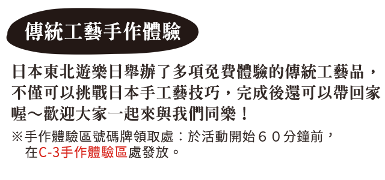

| 12月14日 (五) 與侍酒師一同品酒 |
12月15日 (六) 與唎酒師一同品酒 |
12月16日 (日) 與侍酒師一同品酒 |
|---|---|---|
| 11:30-12:00 | 11:30-12:00 | |
| 13:00-13:30 | 12:30-13:00 | 12:30-13:00 |
| 14:00-14:30 | 14:30-15:00 |
| 12月14日 (五) | 12月15日 (六) | 12月16日 (日) | |
|---|---|---|---|
| 10:00-10:30 | |||
| 10:30-11:00 | 【秋田竿燈祭】 | 【菓匠三全】 伊達武將隊 |
|
| 11:00-11:30 | 【青森縣】 津輕三味線 |
【青森縣】 津輕三味線 |
|
| 11:30-12:00 | 【菓匠三全】 乃木坂46-久保史緒里 &伊達武將隊 |
【山形縣】 劍玉 |
|
| 12:00-12:30 | 羽生結弦周邊抽獎時間 | ||
| 12:30-13:00 | 【山形縣】 劍玉 |
【山形縣】 劍玉 |
|
| 13:00-13:30 | 【岩手縣】 友好!感謝!大家一起跳三颯舞 ＆盛情款待隊 |
【秋田竿燈祭】 | 【秋田竿燈祭】 |
| 13:30-14:00 | 【東北樂天金鷲隊】 啦啦隊表演 |
【生鬼太鼓 鄉神樂】 | |
| 14:00-14:30 | 【生鬼太鼓 鄉神樂】 | 【生鬼太鼓 鄉神樂】 | 【菓匠三全】 伊達武將隊 |
| 14:30-15:00 | 【菓匠三全】 乃木坂46-久保史緒里 &伊達武將隊 |
【菓匠三全】 乃木坂46-久保史緒里 &伊達武將隊 |
|
| 15:00-15:30 | 【岩手縣】 友好!感謝!大家一起跳三颯舞 ＆盛情款待隊 |
||
| 15:30-16:00 | 【福島縣】 Happy隊&じゃんがら念佛舞 |
【岩手縣】 友好!感謝!大家一起跳三颯舞 ＆盛情款待隊 |
【東北樂天金鷲隊 宋家豪選手】 |
| 16:00-16:30 | |||
| 16:30-17:00 | 【秋田竿燈祭】 | 【秋田竿燈祭】 | 【秋田竿燈祭】 |
| 17:00-17:30 | 【東北樂天金鷲隊】 啦啦隊表演 |
【福島縣】 Happy隊 &じゃんがら念佛舞・會津藝妓 |
【福島縣】 Happy隊 &じゃんがら念佛舞・會津藝妓 |
| 17:30-18:00 | 【青森縣】 津輕三味線 |
【生鬼太鼓 鄉神樂】 | |
| 18:00-18:30 | 【生鬼太鼓 鄉神樂】 | 【生鬼太鼓 鄉神樂】 | |
| 18:30-19:00 |
*活動時間以現場安排為主，主辦單位保有更改之權利。

| 12月14日 (五) | 12月15日 (六) | 12月16日 (日) |
|---|---|---|
| 10：30-11：10 【山形縣】 芥子娃娃手繪12名 |
10：30-10：50 【宮城縣】 石卷芥子娃娃手繪10名 |
|
| 11:30-11:50 【宮城縣】 石卷芥子娃娃手繪10名 |
11:30-11:50 【岩手縣】 久慈市「小海女」有緣可愛琥珀研磨 ＆花卷天燈彩繪體驗20名 |
|
| 12:30-13:00 【宮古市】 祈願貝殼彩繪50位 |
12:30-13:00 【宮古市】 祈願貝殼彩繪50位 |
|
| 13:30-14:00 【青森縣】 金魚燈籠10名 |
13:30-14:00 【青森縣】 金魚燈籠10名 |
13:30-14:00 【青森縣】 金魚燈籠10名 |
| 14:30-14:50 【岩手縣】 久慈市「小海女」有緣可愛琥珀研磨 ＆花卷天燈彩繪體驗20名 |
14:30-14:50 【岩手縣】 久慈市「小海女」有緣可愛琥珀研磨 ＆花卷天燈彩繪體驗20名 |
14:30-14:50 【岩手縣】 久慈市「小海女」有緣可愛琥珀研磨 ＆花卷天燈彩繪體驗20名 |
| 15：00-15：20 【岩手縣】 久慈市「小海女」有緣可愛琥珀研磨 ＆花卷天燈彩繪體驗20名 |
15：00-15：20 【岩手縣】 久慈市「小海女」有緣可愛琥珀研磨 ＆花卷天燈彩繪體驗20名 |
15:00-15:30 【宮古市】 祈願貝殼彩繪50位 |
| 16:00-16:20 【宮城縣】 石卷芥子娃娃手繪10名 |
16:00-16:30 【宮古市】 祈願貝殼彩繪50位 |
16:00-16:20 【宮城縣】 石卷芥子娃娃手繪10名 |
| 17:00-17:40 【山形縣】 芥子娃娃手繪12名 |
17:00-17:40 【山形縣】 芥子娃娃手繪12名 |
17:00-17:40 【山形縣】 芥子娃娃手繪12名 |
| 18:00-18:40 【山形縣】 芥子娃娃手繪12名 |
18:00-18:40 【山形縣】 芥子娃娃手繪12名 |
*活動時間以現場安排為主，主辦單位保有更改之權利。